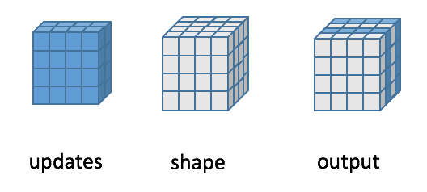

mindspore.ops.ScatterNd¶
-
class
mindspore.ops.ScatterNd[source]¶ Scatters a tensor into a new tensor depending on the specified indices.
Creates an empty tensor with the given shape, and set values by scattering the update tensor depending on indices.
The empty tensor has rank P and indices has rank Q where Q >= 2.
indices has shape \((i_0, i_1, ..., i_{Q-2}, N)\) where N <= P.
The last dimension of indices (with length N ) indicates slices along the N th dimension of the empty tensor.
updates is a tensor of rank Q-1+P-N. Its shape is: \((i_0, i_1, ..., i_{Q-2}, shape_N, ..., shape_{P-1})\).
The following figure shows the calculation process of inserting two slices in the first dimension of a rank-3 with two matrices of new values:
- Inputs:
indices (Tensor) - The index of scattering in the new tensor with int32 or int64 data type. The rank of indices must be at least 2 and indices_shape[-1] <= len(shape).
updates (Tensor) - The source Tensor to be scattered. It has shape indices_shape[:-1] + shape[indices_shape[-1]:].
shape (tuple[int]) - Define the shape of the output tensor, has the same data type as indices. The shape of shape is \((x_1, x_2, ..., x_R)\), and length of ‘shape’ is greater than or equal 2. In other words, the shape of shape is at least \((x_1, x_2)\). And the value of any element in shape must be greater than or equal 1. In other words, \(x_1\) >= 1, \(x_2\) >= 1.
- Outputs:
Tensor, the new tensor, has the same type as update and the same shape as shape.
- Raises
TypeError – If shape is not a tuple.
ValueError – If any element of shape is less than 1.
- Supported Platforms:
AscendGPUCPU
Examples
>>> op = ops.ScatterNd() >>> indices = Tensor(np.array([[0], [2]]), mindspore.int32) >>> updates = Tensor(np.array([[[1, 1, 1, 1], [2, 2, 2, 2], ... [3, 3, 3, 3], [4, 4, 4, 4]], ... [[1, 1, 1, 1], [2, 2, 2, 2], ... [3, 3, 3, 3], [4, 4, 4, 4]]]), mindspore.float32) >>> shape = (4, 4, 4) >>> output = op(indices, updates, shape) >>> print(output) [[[1. 1. 1. 1.] [2. 2. 2. 2.] [3. 3. 3. 3.] [4. 4. 4. 4.]] [[0. 0. 0. 0.] [0. 0. 0. 0.] [0. 0. 0. 0.] [0. 0. 0. 0.]] [[1. 1. 1. 1.] [2. 2. 2. 2.] [3. 3. 3. 3.] [4. 4. 4. 4.]] [[0. 0. 0. 0.] [0. 0. 0. 0.] [0. 0. 0. 0.] [0. 0. 0. 0.]]] >>> indices = Tensor(np.array([[0, 1], [1, 1]]), mindspore.int32) >>> updates = Tensor(np.array([3.2, 1.1]), mindspore.float32) >>> shape = (3, 3) >>> output = op(indices, updates, shape) >>> # In order to facilitate understanding, explain the operator pseudo-operation process step by step: >>> # Step 1: Generate an empty Tensor of the specified shape according to the shape >>> # [ >>> # [0. 0. 0.] >>> # [0. 0. 0.] >>> # [0. 0. 0.] >>> # ] >>> # Step 2: Modify the data at the specified location according to the indicators >>> # 0th row of indices is [0, 1], 0th row of updates is 3.2. >>> # means that the empty tensor in the 0th row and 1st col set to 3.2 >>> # [ >>> # [0. 3.2. 0.] >>> # [0. 0. 0.] >>> # [0. 0. 0.] >>> # ] >>> # 1th row of indices is [1, 1], 1th row of updates is 1.1. >>> # means that the empty tensor in the 1th row and 1st col set to 1.1 >>> # [ >>> # [0. 3.2. 0.] >>> # [0. 1.1 0.] >>> # [0. 0. 0.] >>> # ] >>> # The final result is as follows: >>> print(output) [[0. 3.2 0.] [0. 1.1 0.] [0. 0. 0.]]